\[ \begin{align} \mu &= \alpha + \beta_A I_A + \beta_B I_B + \beta_C I_C \\ \rlap{I_A + I_B + I_C = 1}{\quad} & \\ I_C &= 1 - (I_A + I_B) \\ \mu &= \alpha + \beta_A I_A + \beta_B I_B + \beta_C (1 - (I_A + I_B)) \\ &= \alpha + (\beta_A - \beta_C) I_A + (\beta_B - \beta_C) I_B + \beta_C \\ &= (\alpha + \beta_C) + (\beta_A - \beta_C) I_A + (\beta_B - \beta_C) I_B \end{align} \]
\[ \begin{align} \require{cancel} \mu &= \alpha + \beta_A I_A + \beta_B I_B + \beta_C I_C \\ &= (\alpha + \beta_C) + (\beta_A - \beta_C) I_A + (\beta_B - \beta_C) I_B \\ \mu' &= \alpha' + \beta_A' I_A + \beta_B' I_B + \beta_C' I_C \\ &= (\alpha' + \beta_C) + (\beta_A' - \beta_C') I_A + (\beta_B' - \beta_C') I_B \\ &= [(\alpha - \delta) + (\beta_C + \delta)] + [(\beta_A + \delta) - (\beta_C + \delta)] I_A + [(\beta_B + \delta) - (\beta_C + \delta)] I_B \\ &= [(\alpha - \cancel{\delta}) + (\beta_C + \cancel{\delta})] + [(\beta_A + \cancel{\delta}) - (\beta_C + \cancel{\delta})] I_A + [(\beta_B + \cancel{\delta}) - (\beta_C + \cancel{\delta})] I_B \\ &= (\alpha + \beta_C) + (\beta_A - \beta_C) I_A + (\beta_B - \beta_C) I_B \\ &= \mu \end{align} \]
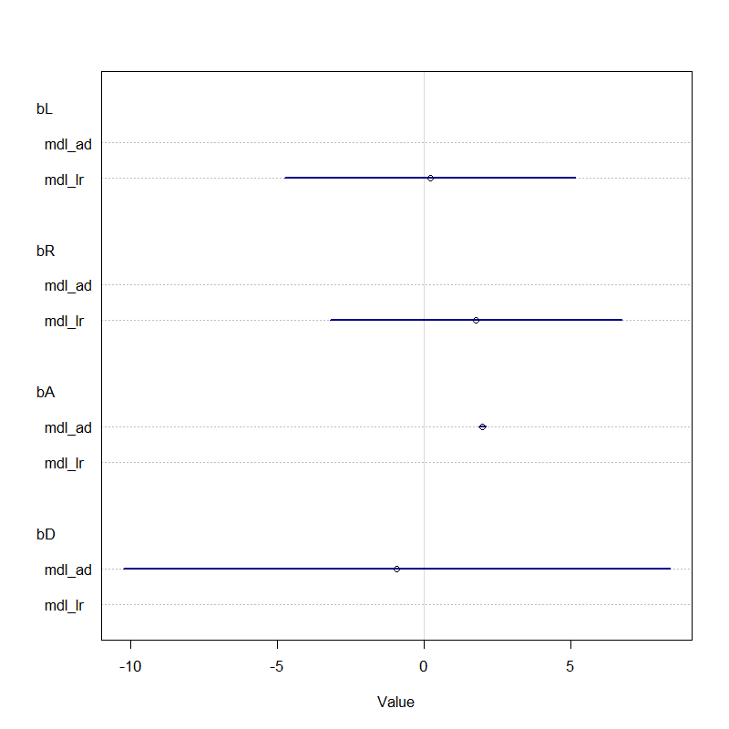
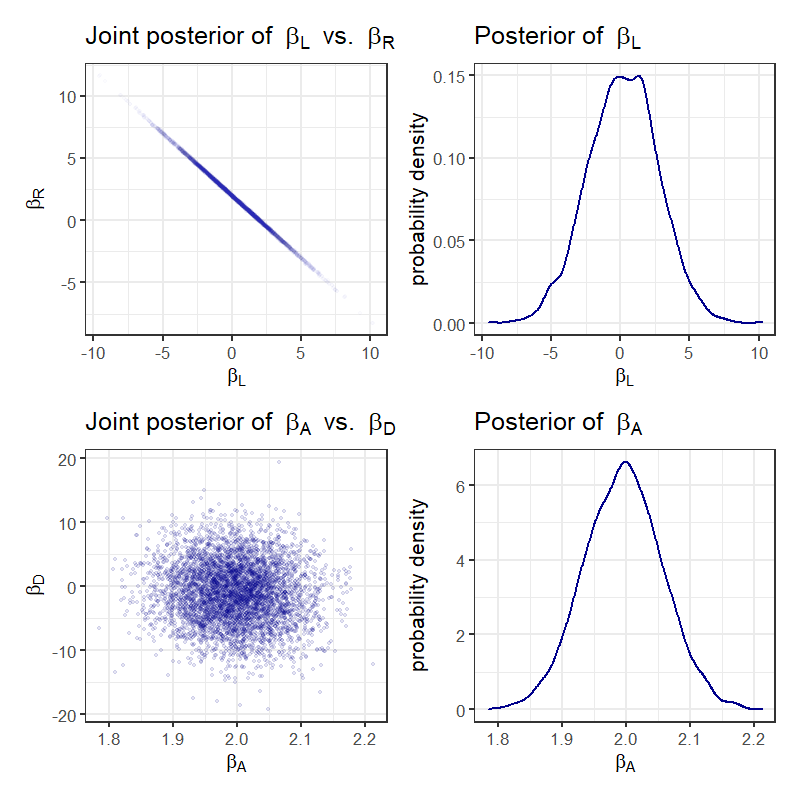
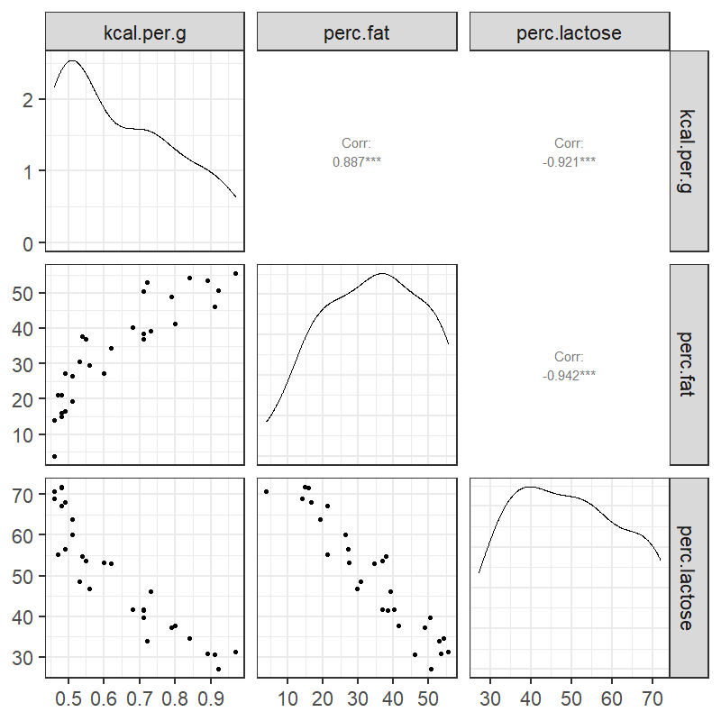
mdl_milk <- quap(
alist(
K ~ dnorm(mu, sigma),
mu <- a + bF * F + bL * L,
a ~ dnorm(0, 0.2),
bF ~ dnorm(0, 0.5),
bL ~ dnorm(0, 0.5),
sigma ~ dexp(1)
), data=d )
precis_show(precis(mdl_milk, digits = 2))## mean sd 5.5% 94.5%
## a 0.00 0.07 -0.11 0.11
## bF 0.24 0.18 -0.05 0.54
## bL -0.68 0.18 -0.97 -0.38
## sigma 0.38 0.05 0.30 0.46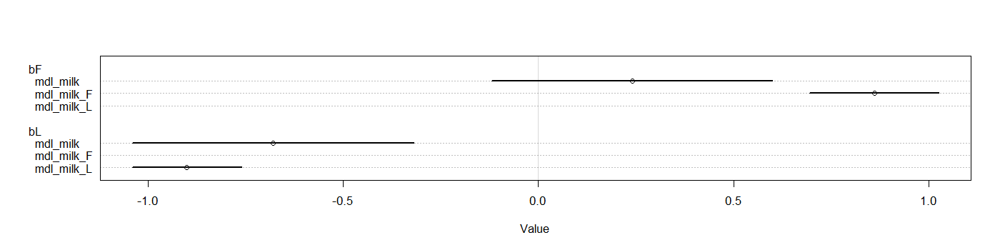
Knowledge of biology 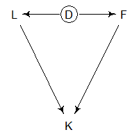
Density D is important
mdl_fungus <- quap(
alist(
H1 ~ dnorm(mu, sigma),
mu <- H0 * p,
# p is growth rate
p <- a + bT * T + bF * F,
a ~ dlnorm(0, 0.2),
bT ~ dnorm(0, 0.5),
bF ~ dnorm(0, 0.5),
sigma ~ dexp(1)
), data=d)## mean sd 5.5% 94.5%
## a 1.48 0.02 1.44 1.52
## bT 0.00 0.03 -0.05 0.05
## bF -0.27 0.04 -0.33 -0.21
## sigma 1.41 0.10 1.25 1.57mean(bT) = 0.Fungus is the big thing that affects the plants’ growth
Treatment affects fungus.
Fungus is a better predictor
DAG
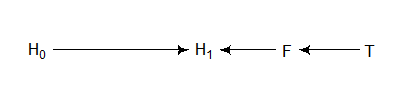
## Implied Conditional Independencies## F _||_ H_0
## H_0 _||_ T
## H_1 _||_ T | FDAG
Conditioning on F induces a D-separation (directional separation) between T and H1.
Remove fungus data from the model.
Suppose we have this DAG:
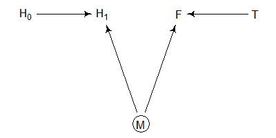
Fungus does not influence plant growth.
Moisture influences both plant growth and fungus
Fitting our original model falsely implies that treatment benefits plants.
This is a kind of collider effect.
Everyone’s happiness is something they are born with and it doesn’t change.
Happier people are more likely to get married
Older people are more likely to be married.
DAG:
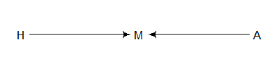
This diagram is a collider: Causal paths from H and A collide at M
Load data
Look for an association between age and happiness.
Clean the data: Select adults and convert age to a variable that goes from 0 to 1, and create a marriage index:
The model says that people become unhappy as they get older
Fork
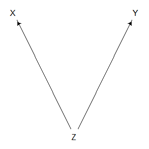
Pipe
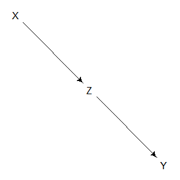
Collider
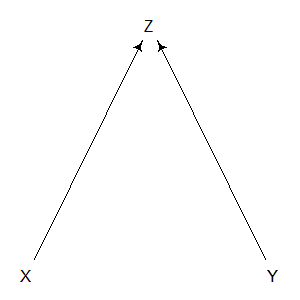
Descendant
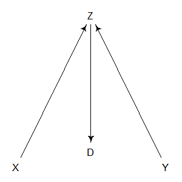